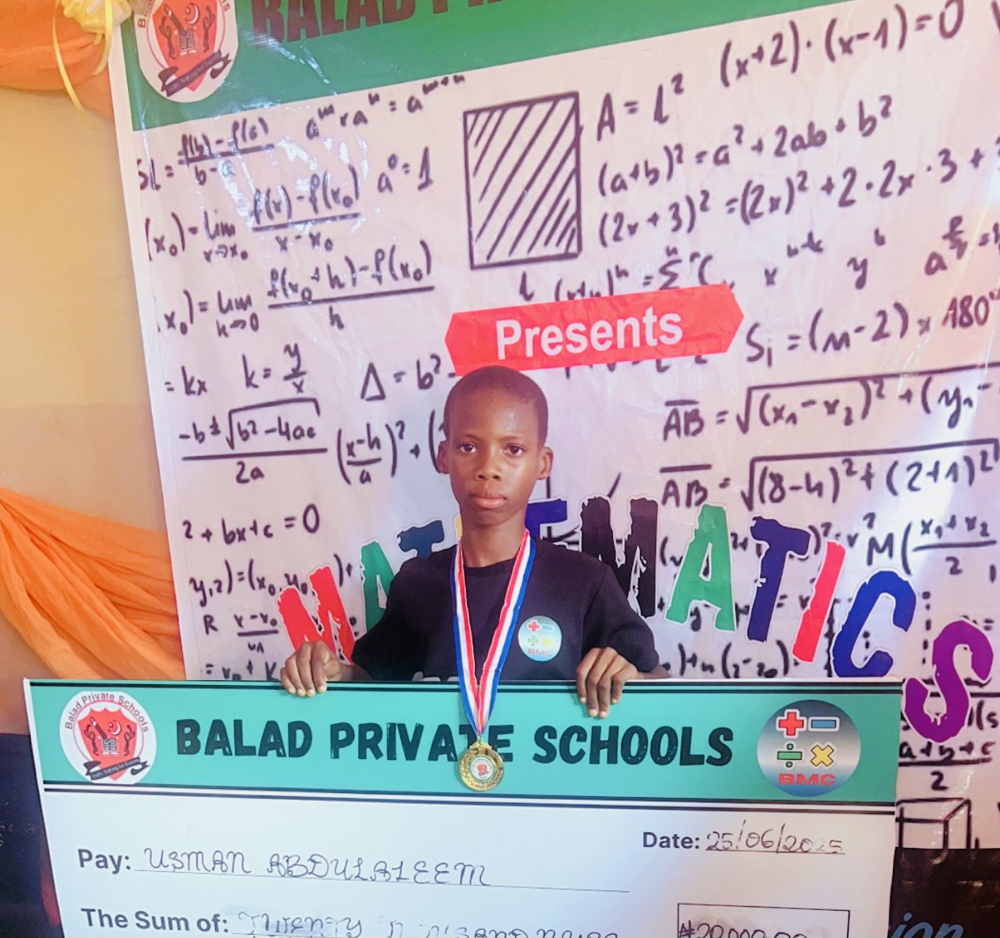
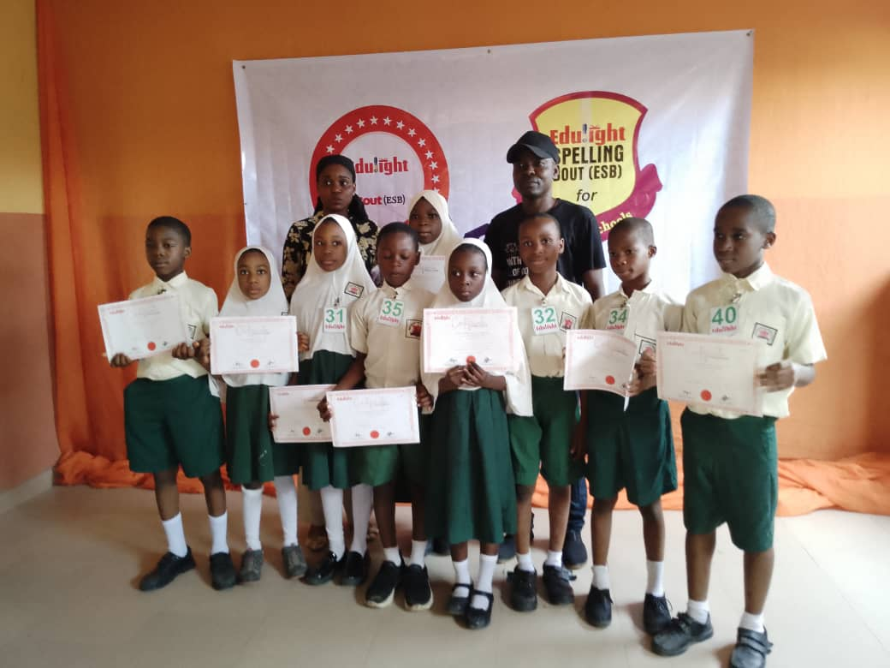
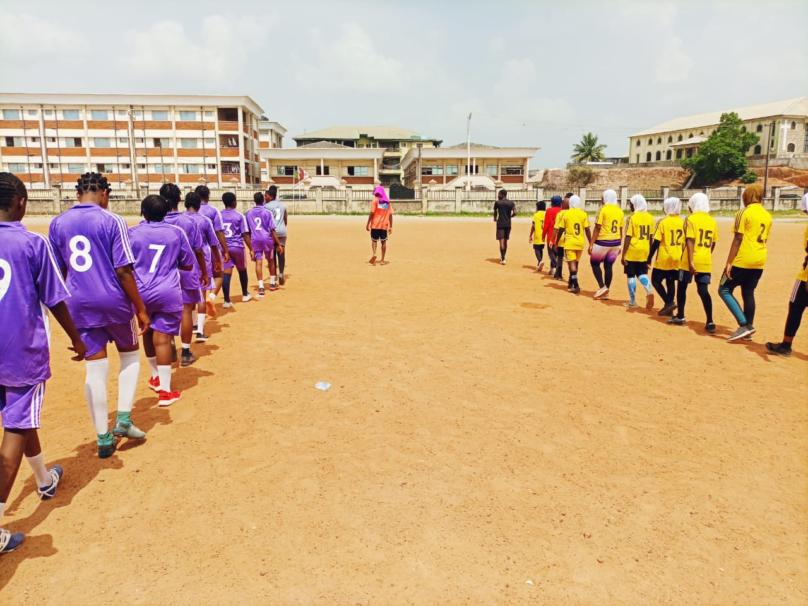

Creative Learning
A short look at practical student creativity.
Pre-Crèche • Crèche • Nursery • Primary • College • CBT Centre
"Nothing but Success"
Please prepare the following documents for admission.
Where applicable
Our simple admission process guides parents smoothly from enquiry to school resumption.
Contact the school to receive information about admission availability and procedures.
Complete the admission form and provide the required details about the learner.
The learner may undergo an assessment or interview for appropriate class placement.
Successful applicants receive confirmation and further instructions from the school.
Complete registration and begin your child's educational journey at Balad Private Schools.
Parents can contact the school or visit the school to begin the admission process.
Admission is available into Pre-Crèche, Crèche, Nursery, Primary and College, subject to available spaces.
Yes. Learners may undergo an assessment or interview before being placed in the appropriate class.
Yes. Transfer students are welcome and may be required to provide previous academic records.
LIFE & LEARNING AT BALAD
From practical learning to achievement, creativity and school activities, students are encouraged to learn with confidence.





A short look at practical student creativity.
Confidence and creativity beyond lessons.
Give your child the opportunity to learn, grow and succeed in a supportive environment built on excellence and strong values.
Apply for Admission